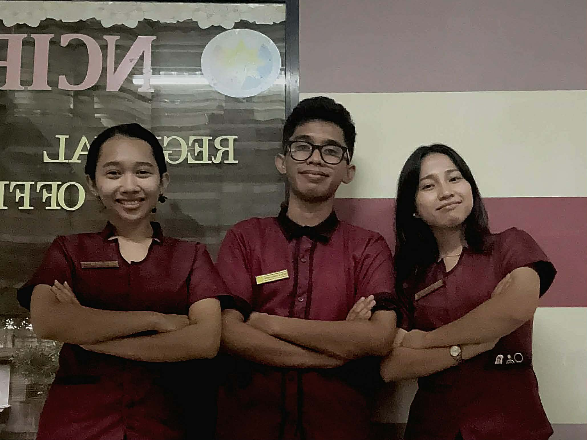

This blog was created to archive my experiences, accomplishments, and reflections throughout my On-the-Job Training. It showcases my journey with the DISKAR-TECH team, my capstone achievements, and the lessons that shaped my final months as a student.
This website serves as a digital portfolio and journal of my professional development journey. It documents:
Throughout this website, you'll discover detailed accounts of my work with the Diskar-Tech team, insights from my capstone project defense, and reflections on how these experiences have prepared me for my future career in technology and project management.
Meet the talented individuals who made this journey possible

Hadjara A. Salem
Leading the team with vision and coordination
Harra Lou S. Ramos
Ensuring excellence in every deliverable
Helman Dashelle Dacuma
Building innovative solutions
Together, the Diskar-Tech team has worked tirelessly to deliver exceptional results. Each member brings unique skills and perspectives, creating a dynamic and productive work environment that fosters growth and innovation.